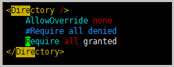
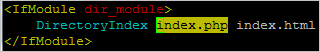

本教程介绍如何手动在 ECS 实例上搭建LAMP环境（CentOS 8），其中LNMP分别代表Linux、Apache、MySQL 和 PHP。
前提条件
使用本教程进行操作前，请确保您已经注册了阿里云账号。如还未注册，请先完成 账号注册。
背景信息
本篇教程在示例步骤中使用了以下配置的 ECS 实例：
- 实例规格：ecs.c6.large
- 操作系统：CentOS 7.2 64位
- 专有网络
- 公网IP
使用限制
本篇教程在示例步骤中使用了以下版本的软件。操作时，请您以实际软件版本为准。
- Apache：2.4.43
- MySQL：5.6.24
- PHP：7.0.32
- phpMyAdmin：4.0.10.20
本篇教程适用于熟悉Linux操作系统，初次使用阿里云进行建站的个人用户。
本篇教程主要说明手动安装 LAMP 平台的操作步骤，您也可以在 云市场 购买 LAMP 镜像直接启动 ECS，以便快速建站。
操作步骤
使用云服务器 ECS 搭建 LAMP 平台的操作步骤如下：
- 准备编译环境
- 安装 Apache
- 安装 MySQL
- 安装 PHP
- 安装 phpMyAdmin
准备编译环境
运行命令
cat /etc/redhat-release查看系统版本。关闭防火墙。
运行命令
systemctl status firewalld查看当前防火墙的状态。
- 如果防火墙的状态参数是 inactive，则防火墙为关闭状态。
- 如果防火墙的状态参数是 active，则防火墙为开启状态。本示例在防火墙为开启状态，因此需要关闭防火墙。
关闭防火墙。如果防火墙为关闭状态，请忽略此步骤。
如果您想临时关闭防火墙，运行命令
systemctl stop firewalld。如果您想永久关闭防火墙，运行命令
systemctl disable firewalld。说明
如果您想重新开启防火墙，请参见 firewalld官网信息。
关闭 SELinux。
运行命令
getenforce命令查看 SELinux，运行命令setenforce 0。- 如果 SELinux 状态参数是 Disabled，则 SELinux 为关闭状态。
- 如果 SELinux 状态参数是 Enforcing，则 SELinux 为开启状态。本示例中 SELinux 为开启状态，因此需要关闭 SELinux。
关闭 SELinux。如果 SELinux 为关闭状态，请忽略此步骤。
如果您想临时关闭 SELinux，运行命令
setenforce 0。如果您想永久关闭 SELinux，运行命令
vi /etc/selinux/config编辑 SELinux 配置文件。回车后，把光标移动到 SELINUX=enforcing 这一行，按i键，将其修改为 SELINUX=disabled，按Esc键，然后输入:wq并回车以保存并关闭 SELinux 配置文件。说明
如果您想重新开启SELinux，请参见 SELinux的官方文档。
重启系统使设置生效。
安装 Apache
依次运行以下命令安装依赖包。
1
yum groupinstall "Development Tools" -y
1
yum install libtool -y
1
yum install expat-devel pcre pcre-devel openssl-devel -y
依次运行以下命令下载并解压 Apache、Apr 和 Apr-util 的源码包。
说明
源码包版本会不断升级。您可以从 httpd源码安装包 和 apr源码安装包 页面查看可用的源码包版本，并将命令中的源码包版本替换为待安装的版本。
1
wget https://mirrors.aliyun.com/apache/httpd/httpd-<Apache源码包版本>.tar.gz
本示例步骤中，使用的 Apache 源码安装包版本为 2.4.43，因此下载命令为：
wget https://mirrors.aliyun.com/apache/httpd/httpd-2.4.43.tar.gz1
wget https://mirrors.aliyun.com/apache/apr/apr-<Apr源码包版本>.tar.gz
本示例步骤中，使用的 Apr 源码安装包版本为 1.6.5，因此下载命令为：
wget https://mirrors.aliyun.com/apache/apr/apr-1.6.5.tar.gz1
wget https://mirrors.aliyun.com/apache/apr/apr-util-<Apr-util源码包版本>.tar.gz
本示例步骤中，使用的 Apr-util 源码安装包版本为 1.6.1，因此下载命令为：
wget https://mirrors.aliyun.com/apache/apr/apr-util-1.6.1.tar.gz1
tar xvf httpd-<Apache源码包版本>.tar.gz -C /usr/local/src
本示例步骤中，使用的 Apache 源码安装包版本为 2.4.43，因此解压命令为：
tar xvf httpd-2.4.43.tar.gz -C /usr/local/src1
tar xvf apr-<Apr源码包版本>.tar.gz -C /usr/local/src
本示例步骤中，使用的 Apr 源码安装包版本为 1.6.5，因此解压命令为：
tar xvf apr-1.6.5.tar.gz -C /usr/local/src1
tar xvf apr-util-<Apr-util源码包版本>.tar.gz -C /usr/local/src
本示例步骤中，使用的 Apr-util 源码安装包版本为 1.6.1，因此解压命令为：
tar xvf apr-util-1.6.1.tar.gz -C /usr/local/src依次运行以下命令把 Apr 和 Apr-util 的文件夹移到 Apache 的 srclib 文件夹下。
1
cd /usr/local/src
1
mv apr-<apr源码包版本> httpd-<Apache源码包版本>/srclib/apr
本示例步骤中，使用的 Apr 和 Apache 源码安装包版本分别为 1.6.5 和 2.4.43，因此移动文件夹的命令为：
mv apr-1.6.5 httpd-2.4.43/srclib/apr1
mv apr-util-<Apr-util源码包版本> httpd-<Apache源码包版本>/srclib/apr-util
本示例步骤中，使用的 Apr-util 和 Apache 源码安装包版本分别为 1.6.1 和 2.4.43，因此移动文件夹的命令为：
mv apr-util-1.6.1 httpd-2.4.43/srclib/apr-util依次运行以下命令编译源码。
1
cd /usr/local/src/httpd-<源码包版本>
本示例步骤中，使用的Apache源码包版本为2.4.43，因此进入Apache源码所在目录的命令为：
cd /usr/local/src/httpd-2.4.431
./buildconf
1
2
3
4
5
6
7
8
9./configure --prefix=/usr/local/apache2 \
--enable-ssl \
--enable-so \
--with-mpm=event \
--with-included-apr \
--enable-cgi \
--enable-rewrite \
--enable-mods-shared=most \
--enable-mpms-shared=all1
make && make install
依次运行以下命令设置 PATH 环境变量。
1
echo "export PATH=$PATH:/usr/local/apache2/bin" > /etc/profile.d/httpd.sh
1
source /etc/profile.d/httpd.sh
运行
httpd -v命令查看 Apache 的版本号。添加 Apache 的启动配置文件。
运行命令
vi /usr/lib/systemd/system/httpd.service，打开 Apache 的启动配置文件。按下
i键然后在配置文件中写入如下内容。1
2
3
4
5
6
7
8
9
10
11
12
13
14[Unit]
Description=The Apache HTTP Server
After=network.target
[Service]
Type=forking
ExecStart=/usr/local/apache2/bin/apachectl -k start
ExecReload=/usr/local/apache2/bin/apachectl -k graceful
ExecStop=/usr/local/apache2/bin/apachectl -k graceful-stop
PIDFile=/usr/local/apache2/logs/httpd.pid
PrivateTmp=false
[Install]
WantedBy=multi-user.target按下
Esc键，然后输入:wq并回车以保存并关闭 Apache 启动配置文件。
依次运行以下命令启动 Apache 服务并设置服务开机自启动。
1
systemctl start httpd
1
systemctl enable httpd
查看安装结果。
在本地机器的浏览器地址栏中，输入
http://IP地址并按Enter键。若返回页面如下图所示，说明 Apache 服务启动成功。
安装 MySQL
准备 MySQL 的编译环境和工作目录。
依次运行以下命令准备编译环境。
1
yum install ncurses-devel bison gnutls-devel -y
1
yum install cmake -y
依次运行以下命令准备 MySQL 数据存放目录，并添加用户和用户组。
1
cd
1
mkdir /mnt/data
1
groupadd -r mysql
1
useradd -r -g mysql -s /sbin/nologin mysql
1
id mysql
运行以下命令更改数据目录属主和属组。
1
chown -R mysql:mysql /mnt/data
依次运行以下命令下载稳定版源码包并解压、编译。
说明
如果 MySQL 官方的下载链接异常，建议您通过第三方链接下载 MySQL 源码包，或者您也可以通过 MySQL 官网或第三方途径下载 MySQL 源码包，然后使用远程连接工具（例如PuTTY）将源码包上传至服务器。
1
wget https://dev.mysql.com/get/Downloads/mysql-5.6.24.tar.gz
1
tar xvf mysql-5.6.24.tar.gz -C /usr/local/src
1
cd /usr/local/src/mysql-5.6.24
1
2
3
4
5
6
7
8
9
10
11
12
13
14
15
16cmake . -DCMAKE_INSTALL_PREFIX=/usr/local/mysql \
-DMYSQL_DATADIR=/mnt/data \
-DSYSCONFDIR=/etc \
-DWITH_INNOBASE_STORAGE_ENGINE=1 \
-DWITH_ARCHIVE_STORAGE_ENGINE=1 \
-DWITH_BLACKHOLE_STORAGE_ENGINE=1 \
-DWITH_READLINE=1 \
-DWITH_SSL=system \
-DWITH_ZLIB=system \
-DWITH_LIBWRAP=0 \
-DMYSQL_TCP_PORT=3306 \
-DDEFAULT_CHARSET=utf8 \
-DMYSQL_UNIX_ADDR=/usr/local/mysql/mysql.sock \
-DDEFAULT_COLLATION=utf8_general_ci \
-DWITH_SYSTEMD=1 \
-DINSTALL_SYSTEMD_UNITDIR=/usr/lib/systemd/system1
make && make install
配置 MySQL。
运行以下命令修改安装目录的属组为 mysql。
1
chown -R mysql:mysql /usr/local/mysql/
依次运行以下命令初始化数据库并复制配置文件。
1
cd /usr/local/mysql
1
/usr/local/mysql/scripts/mysql_install_db --user=mysql --datadir=/mnt/data/
1
mv /etc/my.cnf /etc/my.cnf.bak
1
cp /usr/local/mysql/support-files/my-default.cnf /etc/my.cnf
运行以下命令修改配置文件中的安装路径及数据目录存放路径。
1
echo -e "basedir = /usr/local/mysql\ndatadir = /mnt/data\n" >> /etc/my.cnf
修改 MySQL 的启动配置文件。
运行命令
vi /usr/lib/systemd/system/mysql.service打开 MySQL 的启动配置文件。按下
i键，然后添加如下内容：1
2
3
4
5
6
7
8
9
10
11
12
13
14
15
16
17[Unit]
Description=MySQL Community Server
After=network.target
After=syslog.target
[Install]
WantedBy=multi-user.target
Alias=mysql.service
[Service]
User=mysql
Group=mysql
PermissionsStartOnly=true
ExecStart=/usr/local/mysql/bin/mysqld
TimeoutSec=600
Restart=always
PrivateTmp=false按下
Esc键，然后输入:wq并回车以保存并关闭 MySQL 启动配置文件。
依次运行以下命令设置 PATH 环境变量。
1
echo "export PATH=$PATH:/usr/local/mysql/bin" > /etc/profile.d/mysql.sh
1
source /etc/profile.d/mysql.sh
依次运行以下命令启动 MySQL 服务并设置开机启动。
1
systemctl start mysql
1
systemctl enable mysql
修改 MySQL 的 root 用户密码，并按提示设置密码。
1
mysqladmin -u root password
运行以下命令测试登录 MySQL 数据库。
1
mysql -uroot -p
运行
\q命令退出 MySQL。
安装 PHP
运行以下命令安装依赖包。
1
yum install libmcrypt libmcrypt-devel mhash mhash-devel libxml2 libxml2-devel bzip2 bzip2-devel -y
依次运行以下命令下载稳定版源码包并解压、编译。
1
cd
1
wget https://cn2.php.net/get/php-7.0.32.tar.bz2/from/this/mirror
1
cp mirror php-7.0.32.tar.bz2
1
tar xvf php-7.0.32.tar.bz2 -C /usr/local/src
1
cd /usr/local/src/php-7.0.32
1
2
3
4
5
6
7
8
9
10
11
12
13
14
15
16
17./configure --prefix=/usr/local/php \
--with-config-file-scan-dir=/etc/php.d \
--with-apxs2=/usr/local/apache2/bin/apxs \
--with-config-file-path=/etc \
--with-pdo-mysql=mysqlnd \
--with-mysqli=/usr/local/mysql/bin/mysql_config \
--enable-mbstring \
--with-freetype-dir \
--with-jpeg-dir \
--with-png-dir \
--with-zlib \
--with-libxml-dir=/usr \
--with-openssl \
--enable-xml \
--enable-sockets \
--enable-fpm \
--with-bz21
make && make install
运行以下命令复制 PHP 的配置文件。
1
cp php.ini-production /etc/php.ini
运行命令
vi /usr/local/apache2/conf/httpd.conf打开 Apache 配置文件，按下i键开始编辑。找到 ServerName 参数，添加
ServerName localhost:80。找到
Directory参数，在Require all denied前面添加#，然后添加Require all granted。
找到
DirectoryIndex index.html，将它替换为DirectoryIndex index.php index.html。
找到如下内容：
在后面添加内容：
1
2AddType application/x-httpd-php .php
AddType application/x-httpd-php-source .phps添加完成后，如下图所示。
按下
Esc键，然后输入:wq并回车以保存并关闭Apache 配置文件。
添加 Apache 对解析 PHP 的支持。
运行命令打开 index.php 文件。
按下
i键进入编辑模式，并添加如下内容:按下
Esc键，然后输入:wq并回车以保存并关闭 index.php 文件。运行以下命令重启 Apache 服务。
1
systemctl restart httpd
在本地机器的浏览器地址栏中，输入
https://IP地址并按下Enter键。如果返回页面如下图所示，说明 PHP 解析成功。
安装 phpMyAdmin
依次运行以下命令准备 phpMyAdmin 数据存放目录。
1
cd
1
mkdir -p /usr/local/apache2/htdocs/phpmyadmin
依次运行以下命令下载 phpMyAdmin 压缩包并解压。
1
wget https://files.phpmyadmin.net/phpMyAdmin/4.0.10.20/phpMyAdmin-4.0.10.20-all-languages.zip
1
unzip phpMyAdmin-4.0.10.20-all-languages.zip
运行以下命令复制 phpMyAdmin 文件到准备好的数据存放目录。
1
mv phpMyAdmin-4.0.10.20-all-languages/* /usr/local/apache2/htdocs/phpmyadmin
在本地机器浏览器地址栏，输入
http://IP地址/phpmyadmin并按Enter键，访问 phpMyAdmin 登录界面。输入 MySQL 的用户名和密码，单击 执行。
如果出现以下页面，说明 MySQL 连接成功。